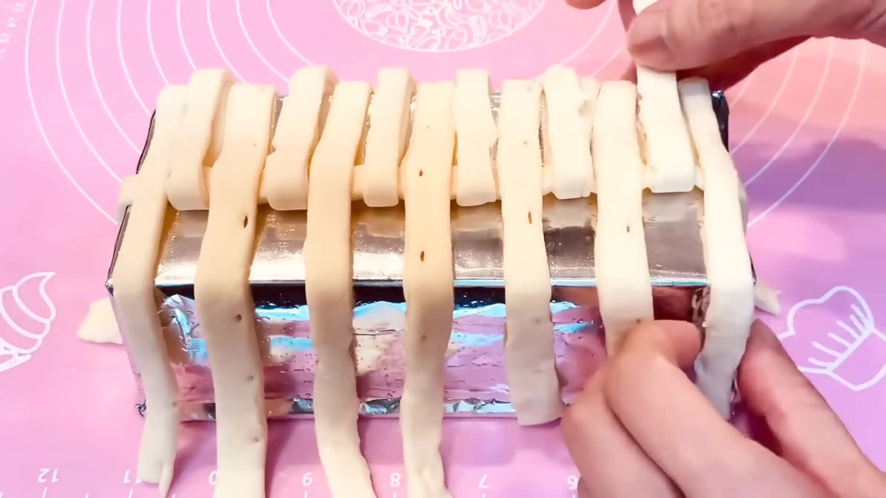
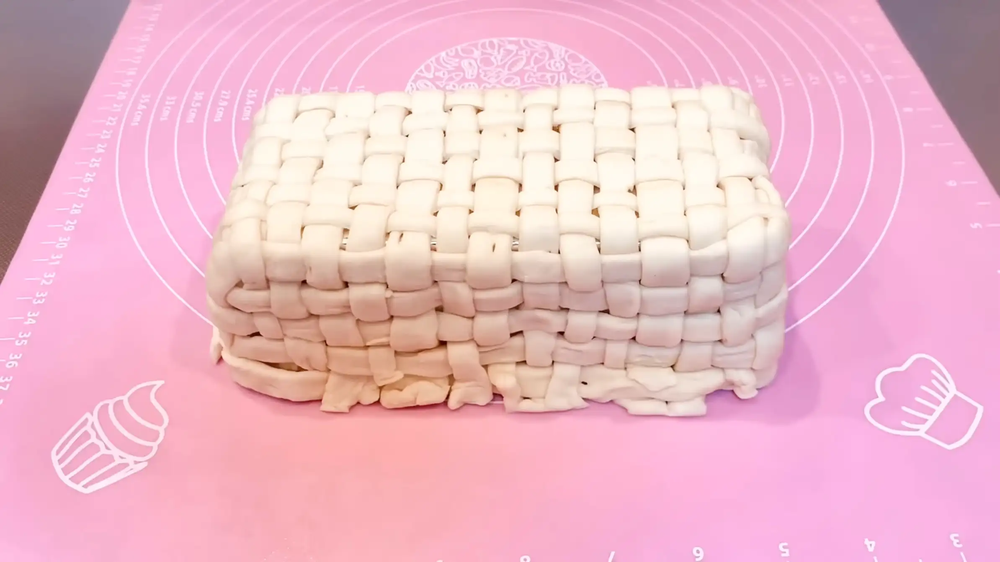
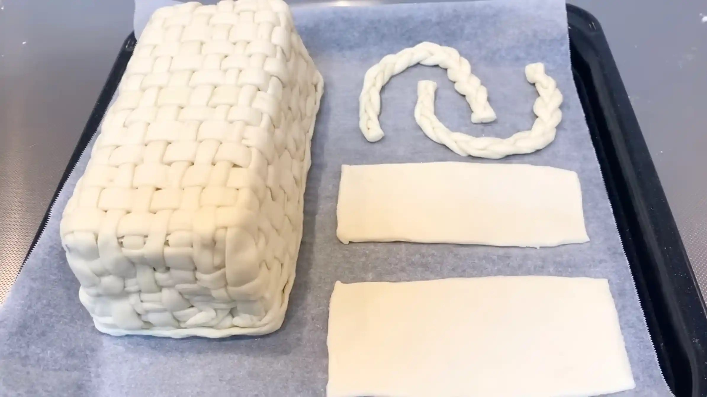

材料
※粉量を変えると自動計算されます
カスタードクリーム
ホイップクリーム
パイ生地
その他
型
作り方
カスタードクリーム
STEP 1
卵黄、グラニュー糖、薄力粉を混ぜる
薄力粉はダマになりやすいので、ここでしっかり混ぜ合わせておきます。
薄力粉はダマになりやすいので、ここでしっかり混ぜ合わせておきます。
STEP 2
さらに牛乳を加え、混ぜる
固まりがなくなるまで、しっかり混ぜます。
固まりがなくなるまで、しっかり混ぜます。
STEP 3
レンジ600wで1分×3回、とろみがつくまで加熱する
1分加熱するごとにレンジから取り出し、しっかり混ぜ、また加熱を繰り返します。とろみがつかなければ、追加で様子を見ながら加熱してください。
1分加熱するごとにレンジから取り出し、しっかり混ぜ、また加熱を繰り返します。とろみがつかなければ、追加で様子を見ながら加熱してください。
STEP 4
冷蔵庫で冷やしておく
カスタードクリームを平らな容器に移してならし、表面にラップをぴったり密着させます。広げることで熱が抜けやすくなり、ラップを密着させることで表面の乾燥も防げます。卵や牛乳を使ったクリームは傷みやすいため、粗熱が取れたら冷蔵庫に入れ、できるだけ早くしっかり冷やします。
カスタードクリームを平らな容器に移してならし、表面にラップをぴったり密着させます。広げることで熱が抜けやすくなり、ラップを密着させることで表面の乾燥も防げます。卵や牛乳を使ったクリームは傷みやすいため、粗熱が取れたら冷蔵庫に入れ、できるだけ早くしっかり冷やします。
ホイップクリーム
STEP 1
ホイップクリームにグラニュー糖を入れ、ミキサーで混ぜる
角が立つくらいまで混ぜ、冷蔵しておきます。
角が立つくらいまで混ぜ、冷蔵しておきます。
パイバスケット
STEP 1
パウンド型にアルミホイルを巻きサラダ油を塗る
バスケットの土台を作ります。型に生地がくっつかないよう、アルミホイルに油を塗ってコーティングしておきます。
バスケットの土台を作ります。型に生地がくっつかないよう、アルミホイルに油を塗ってコーティングしておきます。
STEP 2
冷凍パイシートを3㎜×3本、5㎜×3本、残り全部を1㎝幅にカットする（[動画 01:15]）
パイシートの長さが短ければ、シートをめん棒などでつなげて使ってください。3㎜幅が縁の飾り、5㎜幅が取っ手、1㎝幅がカゴの部分になります。
パイシートの長さが短ければ、シートをめん棒などでつなげて使ってください。3㎜幅が縁の飾り、5㎜幅が取っ手、1㎝幅がカゴの部分になります。
STEP 3
3㎜幅と5㎜幅の生地をそれぞれ三つ編みにする
生地を強く引っ張るとどんどん伸びてきてしまうため、なるべく力を加えずに優しく編み込むのがポイントです。
生地を強く引っ張るとどんどん伸びてきてしまうため、なるべく力を加えずに優しく編み込むのがポイントです。
STEP 4
1㎝幅の生地をパウンド型に並べる
カゴの編み込みの縦のラインになります。型をしっかり覆うように並べていきます。
カゴの編み込みの縦のラインになります。型をしっかり覆うように並べていきます。
STEP 5
一つ飛ばしに生地を持ち上げる
カゴの編み込みの横のラインを置くために、生地を一時的に折り畳みます。
カゴの編み込みの横のラインを置くために、生地を一時的に折り畳みます。
STEP 6
1㎝幅の生地をおく
カゴの編み込みの横のラインになります。こちらも、型をしっかり覆うように並べます。
カゴの編み込みの横のラインになります。こちらも、型をしっかり覆うように並べます。
STEP 7
持ち上げていた生地をもとに戻し、編み込んでいく（[動画 03:12]）
生地を強く引っ張るとどんどん伸びてきてしまうため、なるべく力を加えずに優しく編み込むのがポイントです。
生地を強く引っ張るとどんどん伸びてきてしまうため、なるべく力を加えずに優しく編み込むのがポイントです。
STEP 8
また一つ飛ばしに生地を持ち上げる
STEP5と同様です。
STEP5と同様です。

STEP 9
1㎝幅の生地をおく
STEP6と同様です。
STEP6と同様です。
STEP 10
これを繰り返し、カゴの型に編んでいく
途中少し混乱することもありますが（特に角の部分など）、なんとなくでも案外綺麗に焼き上がりますので、気楽に編んでいきます。端は切り揃えてください。
途中少し混乱することもありますが（特に角の部分など）、なんとなくでも案外綺麗に焼き上がりますので、気楽に編んでいきます。端は切り揃えてください。

STEP 11
3㎜幅の三つ編みをカゴの縁に巻きつける（[動画 05:18]）
パウンド型の縁につけてしまうと焼き上がりに型から外しにくくなるめ、生地の端の切り揃えた上から縁を巻きつけていきます。
パウンド型の縁につけてしまうと焼き上がりに型から外しにくくなるめ、生地の端の切り揃えた上から縁を巻きつけていきます。
STEP 12
5㎜幅の三つ編みをカゴの取手の形に曲げ、天板におく
生地が残っている場合は、ここで一緒に天板に乗せて焼き、デコレーションに使うのもおすすめです。
生地が残っている場合は、ここで一緒に天板に乗せて焼き、デコレーションに使うのもおすすめです。

STEP 13
卵黄を牛乳で溶いたものを塗り、予熱したオーブンで190℃20分〜30分焼く
焼き時間や温度は目安とし、ご家庭のオーブンによってご調整ください。（途中表面が焦げそうな場合は、アルミホイルを被せてください。）
焼き時間や温度は目安とし、ご家庭のオーブンによってご調整ください。（途中表面が焦げそうな場合は、アルミホイルを被せてください。）
STEP 14
あら熱がとれたら型からはずす
この時生地の内側が焼けていなければ、型から外した状態で追加で焼いてください。
この時生地の内側が焼けていなければ、型から外した状態で追加で焼いてください。
STEP 15
クリームやフルーツでデコレーションする
自分好みに楽しくデコレーションして、可愛いパイバスケットの完成です！
自分好みに楽しくデコレーションして、可愛いパイバスケットの完成です！
動画でチェック
おいしく作るためのワンポイントコラム
冷凍パイシートを3種類の幅にカットして籠の形に編み込み、フルーツをモリモリと盛り付ける『パイバスケット』です！ 一見難しそうに見えますが、パイ生地を編み込んでいく作業は「作ることが好き」な人にとってはたまらない時間！クラフト感を存分に味わいながら、美しくおいしく仕上げるための「3つのコツ」をまとめました。
① 美しい編み込みのコツ
籠のベース（1cm幅）、取手（5mm幅）、縁の飾り（3mm幅）と、それぞれのパーツに合わせて生地の幅を変えてカットしていきます。ここでの最大のポイントは生地の温度管理です。パイ生地は室温に長く置くとどんどん緩くなって編みにくくなってしまうため、涼しい場所で作業すること。もし途中でダレてきたら、一度冷蔵庫でしっかりと生地を冷やします。そうすると、綺麗な編み込みができあがりますので、焦らずに作業するのがおすすめです。
② 組み立てと焼きのコツ
ルミホイルを巻き、サラダ油を薄く塗ったパウンド型を逆さにして土台にし、編み込んだ生地を被せるように配置していきます。隙間ができないよう角まで丁寧になじませ、卵黄を塗って香ばしく焼き上げます。型から外したあとに内側の焼き上がりが甘いと感じたら、型なしで追加焼きをしてください。内側までしっかり熱を通してサクサク食感に仕上げるのが、おいしくて可愛い籠を作る大切なポイントです。
③ ボリュームを出す仕上げのコツ
焼き上がった籠の中には、カスタードクリームやホイップクリームをたっぷりと詰めていきます。このとき、クリームだけで埋めようとすると少し重たい仕上がりになるため、余ったパイ生地の切れ端を一緒に焼いて、中層に忍ばせるのがおすすめです。こうすることで上げ底になってボリューム感が出ると同時に、カットしたときのサクサクとした層の食感のアクセントにもなります。
「少し三つ編みが細すぎたかな？」「こうしたらもっと可愛いかも！」と、あれこれ工夫しながら作っていくプロセスは本当に楽しいですよね。丁寧に作ったパイバスケットは、きっと素敵なものになっているはずです！皆さんも、お時間のある時にぜひ挑戦してみてください。
① 美しい編み込みのコツ
籠のベース（1cm幅）、取手（5mm幅）、縁の飾り（3mm幅）と、それぞれのパーツに合わせて生地の幅を変えてカットしていきます。ここでの最大のポイントは生地の温度管理です。パイ生地は室温に長く置くとどんどん緩くなって編みにくくなってしまうため、涼しい場所で作業すること。もし途中でダレてきたら、一度冷蔵庫でしっかりと生地を冷やします。そうすると、綺麗な編み込みができあがりますので、焦らずに作業するのがおすすめです。
② 組み立てと焼きのコツ
ルミホイルを巻き、サラダ油を薄く塗ったパウンド型を逆さにして土台にし、編み込んだ生地を被せるように配置していきます。隙間ができないよう角まで丁寧になじませ、卵黄を塗って香ばしく焼き上げます。型から外したあとに内側の焼き上がりが甘いと感じたら、型なしで追加焼きをしてください。内側までしっかり熱を通してサクサク食感に仕上げるのが、おいしくて可愛い籠を作る大切なポイントです。
③ ボリュームを出す仕上げのコツ
焼き上がった籠の中には、カスタードクリームやホイップクリームをたっぷりと詰めていきます。このとき、クリームだけで埋めようとすると少し重たい仕上がりになるため、余ったパイ生地の切れ端を一緒に焼いて、中層に忍ばせるのがおすすめです。こうすることで上げ底になってボリューム感が出ると同時に、カットしたときのサクサクとした層の食感のアクセントにもなります。
「少し三つ編みが細すぎたかな？」「こうしたらもっと可愛いかも！」と、あれこれ工夫しながら作っていくプロセスは本当に楽しいですよね。丁寧に作ったパイバスケットは、きっと素敵なものになっているはずです！皆さんも、お時間のある時にぜひ挑戦してみてください。


冷凍パイシートを使って、まるで本物の籠のような可愛い器を作り、フルーツやクリームを楽しくデコレーションする『パイバスケット』のレシピです！コラムでは「美しい編み込みのコツ」「組み立てと焼きのコツ」「ボリュームを出す仕上げのコツ」の3つのコツをご紹介します。